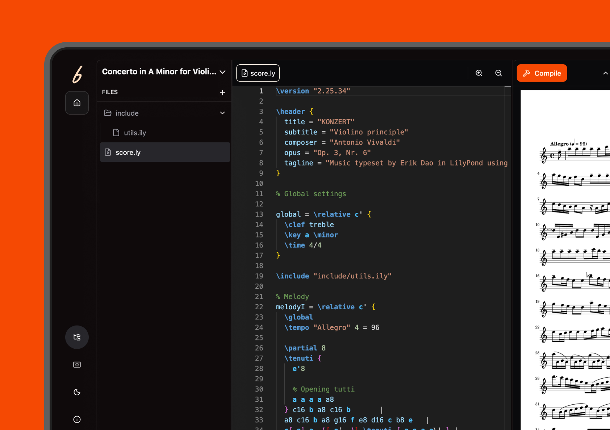
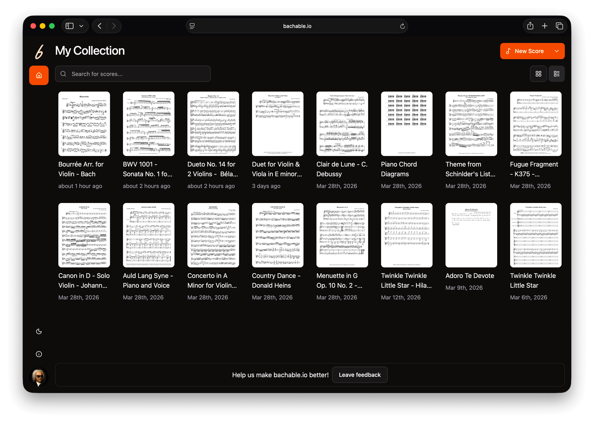
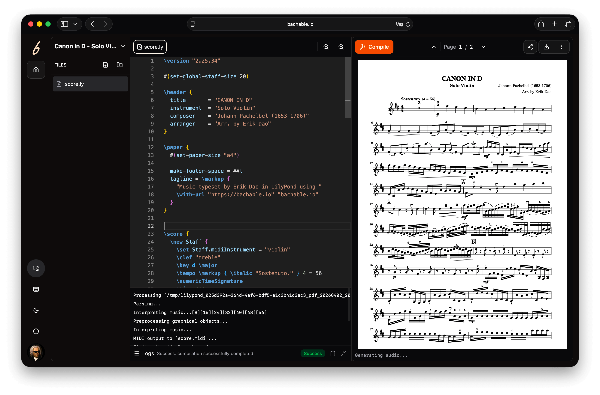

Bachable.io is a browser-based music notation tool with complex UI. I built a design system based on shadcn/ui to give the team a shared foundation.

Bachable.io is a browser-based music notation tool. Write, collaborate, and publish professional sheet music with no local setup. The UI is complex: score editors, playback controls, export flows, real-time collaboration.
A good design is only as good as the product that is launched. I built a design system from scratch using shadcn/ui to give the team a shared foundation from day one: fast to use, consistent in output, and directly connected to the codebase. This project demonstrates my strength in collaborating with technical stakeholders to ship products in a fast and scaleable way.
Browser-based music notation powered by LilyPond. Publication-quality scores, instant preview, collaboration-first music notation editor.
A tiny cross-functional team of 1 designer and 1 developer. With limited resources, speed and consistency were both non-negotiable.
React, Tailwind CSS, and shadcn/ui. The techstack that enables small teams to ship beautiful and usable products fast.
Without a system in place, designer and developer risked solving the same UI problems independently and diverging as the product grew.
The team needed to design and ship new screens quickly without rebuilding the same patterns each time.
Starting from scratch meant making the right decisions upfront. The first step was scoping what the system needed and how it would connect to the dev workflow.
Spoke with the developer early on how they wanted to consume components, so the system would feel natural rather than imposed.
Selected shadcn/ui: aligned with the React and Tailwind stack, zero adoption friction, and components developer can own and modify directly.
Tokens map semantic decisions (colors, type, spacing, radii, etc) to Tailwind CSS variables. Every choice in Figma maps (to the extent possible) to code. Each color has a role, not just a value. Designer and developer uses the same name, so no back-and-forth needed.
Designer in Figma
Developer in Code
Color token name
color/fg-primary
Color reference
fg-primary
Color token name in Figma
color/fg-primary
Color referenced in code
fg-primary
Primary color
Component name
Button/variant=primary
Component reference
<Button variant="primary">
Component name in Figma
Button/variant=primary
Component referenced in code
<Button variant="primary">
Primary button
New screens were assembled from components, not designed from scratch. Design-to-code required minimal interpretation.
1×
Each decision made once, reused everywhere
0
Back-and-forth on "what shade of orange is this?".
Any
Screen built from the same source of truth

